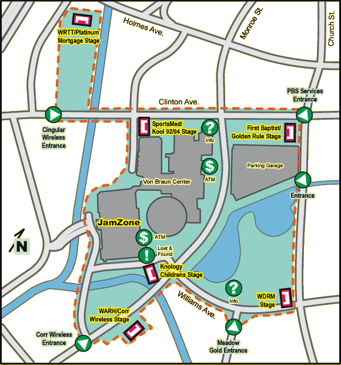

Home - News - About - Pictures - Audio - Lyrics - Schedule
November
With the change in season, changes have come to the band.
Aaron Cox has decided to leave Onward for the band at his 'home' church, Living Word Church, on Garth Road. We have enjoyed Aaron's time with the band and wish him the best.
Jennifer Hood has also decided to leave Onward; she and James want to attend a church closer to home. We also wish them the best in their new role as parents; the rewards will be enormous!
October
Congratulations to Jennifer and James on the birth of their 1st child, Lilly Marie! (she was born September 20th, at 5:50 am)
September 5th 2004 (9:33 pm)
Onward played a very decent set at Good Shepherd Catholic Church on the corner of Chaney Thompson and Hobbs Rd, the Good Shepherd was having their own kind of concerts in the park. The turn out was fairly nice for a late summer concert. Keep tuned in to see what news comes up next
September 2004
Onward will be playing outside at the Pavilion at Good Shepherd Church (located on Hobbs Road) Sunday, September 5th at 6 pm
August 9, 2004
Onward will be playing at Concerts in the Park in Big Spring Park sometime between 6 pm and 8 pm starting at 6 p.m.
October 01, 2003(update from Webmaster)
Onward played an awesome set at the Jam, and had a pretty awesome turn out, plus, we had at least one person in the BFTJ service that was there from the jam, he bought a CD as well at the service
Click Here, to see an animated gif from the morning show
September 24, 2003
Big Spring Jam!!
Onward will be playing big spring jam, Saturday September 27th, on the 1st Baptist /Golden Rule stage at 3:00
heres a Map

Go to http://www.bigspringjam.org for more info
September 23, 2003
Onward will be playing WHNTs morning show, on Friday, September 26th, as the morning show preview the weekends events
Set your VCR/TIvo for this one!
August 29, 2003
Onward is hard at work on the set list for the Big Spring Jam performance. The plan is to play a mix of songs from "Walkin' On Water," popular positive-message cover songs, and a few new original songs that have debuted over the past few months. The band also expects to have someone at the site selling "Walkin' On Water" CDs, so this is an opportunity to get a copy if you haven't already done so.
July 28, 2003
Great news: Onward has been selected to perform at Huntsville's Big Spring Jam! The planned slot is for Saturday, September 27 at 2:45pm - 3:45pm on the Christian stage. The band is very pleased to have been selected and is looking forward to playing an exciting set!
June 1, 2003
Onward will be playing at Living Word Church in Huntsville on Friday, June 6 at 8:00pm.
March 29, 2003
Onward will be playing at Central United Methodist Church in Decatur on Sunday, April 6. Central UMC has just started a new Contemporary Service on Sunday evenings at 6:00pm, and Onward is pleased to participate. Mitchell Williams will deliver the sermon, so come on out and join us in helping them get their service going strong!
January 2, 2003
Happy New Year! Onward is expecting a busy and exciting year in 2003.
}} Onward's CD, "Walkin' on Water," is now available for purchase. {{
The price is $10, and all proceeds go to Aldersgate United Methodist Church in Huntsville, AL. This CD is the culmination of several months of writing, arranging, recording, and mixing. It was a lot of work, but the band is pleased with the result and looking forward to getting out and playing as much as possible and hearing feedback from everyone.
You may email the Webmaster for information on purchasing a copy.
The final track listing is:
1. Hold On
2. Straight Down the Line
3. The Gift
4. What Everyone Needs
5. Be With Me
6. Nine-eleven-oh-one
7. Walking On Water
8. My Promise
9. Shaken Up
10. A2D
11. It Beats For You
12. Go
The cover art is gorgeous and was painted by local artist Andrew Sharpe:

Onward is looking forward to getting out and playing this year in support of the CD release. Contact any band member or email the Webmaster for more information on booking the band for your event!
Home - News - About - Pictures - Audio - Lyrics - Schedule
All Content created by James Hood, all Artwork Created by James Hood, all Music/lyrics created by John Onder
Webmaster - James Hood